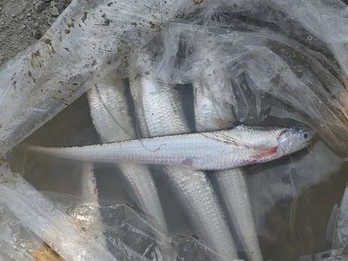

鱼类 · 动物界
长江刀鱼 Coilia nasus

长江流域的洄游性小型鱼类，体形侧扁如刀、尾细长如鞭，春季溯江而上产卵，因过度捕捞与水利工程，野生资源急剧衰退。
- 分类
- 门脊索动物门纲硬骨鱼纲目鲱形目科鳀科属鲚属
- 栖息环境
- 长江干流与支流的缓流浅滩、河口咸淡水交汇区及近海
- 地理分布
- 中国长江流域、钱塘江水系及黄海、东海近岸
- 保护级别
- IUCN 数据缺乏（DD）；中国国家二级保护动物
物种志
长江刀鱼体形侧扁而长，成年体长 20–40 厘米，体重 50–200 克。体呈银白色，背部略带青灰，鳞片薄易脱落；吻部突出，上颌骨延长呈匙状，胸鳍上部有 6 根游离的丝状鳍条，向后延伸如细鞭，尾鳍细尖，整体轮廓像一把薄刀，故得名“刀鱼”。腹腔内有一条明显的脂肪带。
它们分布于中国长江流域及黄海、东海近岸，是典型的溯河洄游鱼类：成鱼在近海生活，每年 2–4 月沿长江上溯数百至上千千米，到江水中下游的缓流浅滩产卵，卵孵化后幼鱼顺流而下，在河口与近海育肥。食性以小型甲壳类、小鱼为主。由于长江航运、水坝阻隔、采砂与过度捕捞，野生刀鱼资源在近数十年急剧衰减，个体规格也明显变小。中国已实施长江十年禁渔，并将其列为国家二级保护动物，以恢复种群。
形态与习性
- 体长约 20–40 cm，体重 50–200 g
- 食性小型甲壳类、小鱼与水生昆虫
- 洄游2–4 月溯长江上溯数百至上千千米产卵
- 繁殖在缓流浅滩产卵，幼鱼顺流至河口与近海育肥
- 识别特征体侧扁如刀，胸鳍上部有 6 根游离丝状鳍条
- 种群现状近数十年资源急剧衰减，个体规格明显变小
- 保护措施长江十年禁渔，并被列为国家二级保护动物
趣味知识
- 长江刀鱼的身体薄得像一把刀，尾巴细得像一根鞭子。
- 每年春天它从海里逆流而上，能游上千千米到长江中游产卵。
- 因为过度捕捞，野生刀鱼越来越少，价格一度高得惊人。